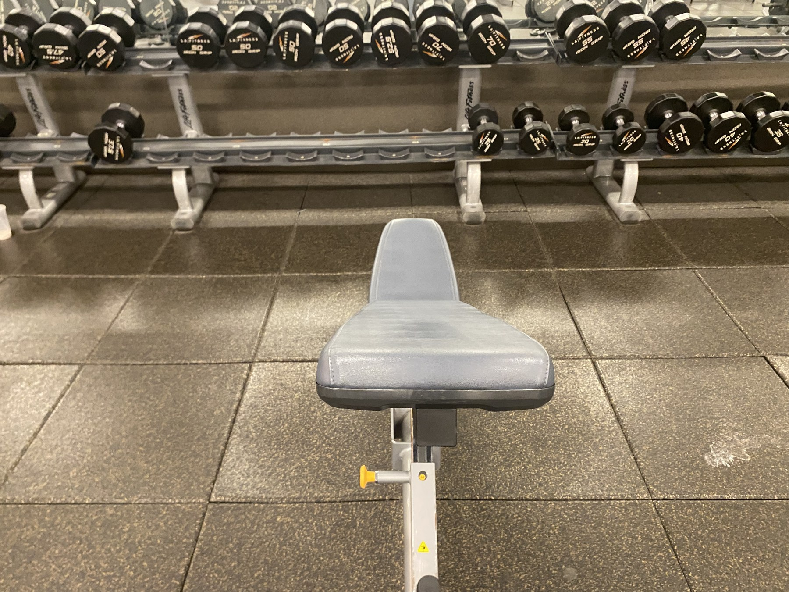
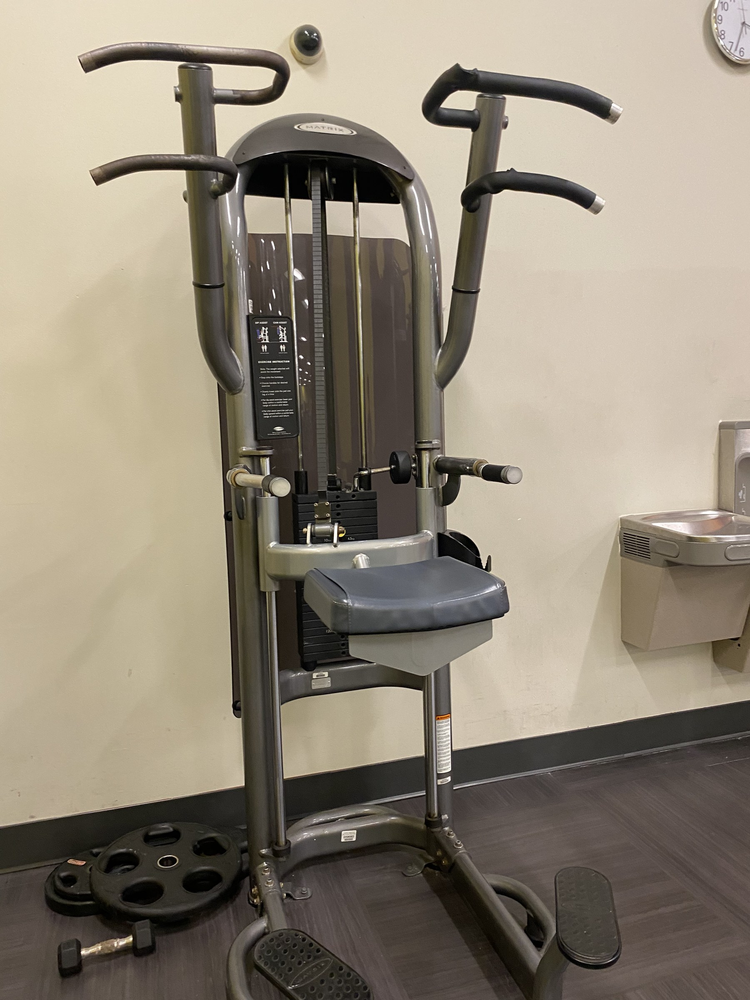
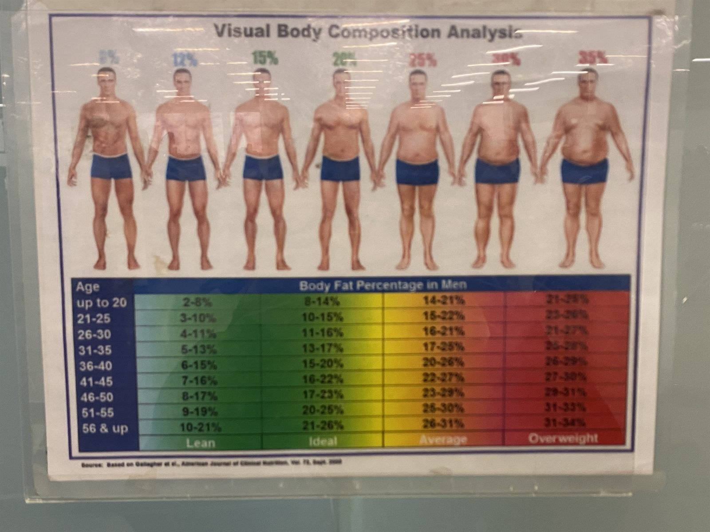
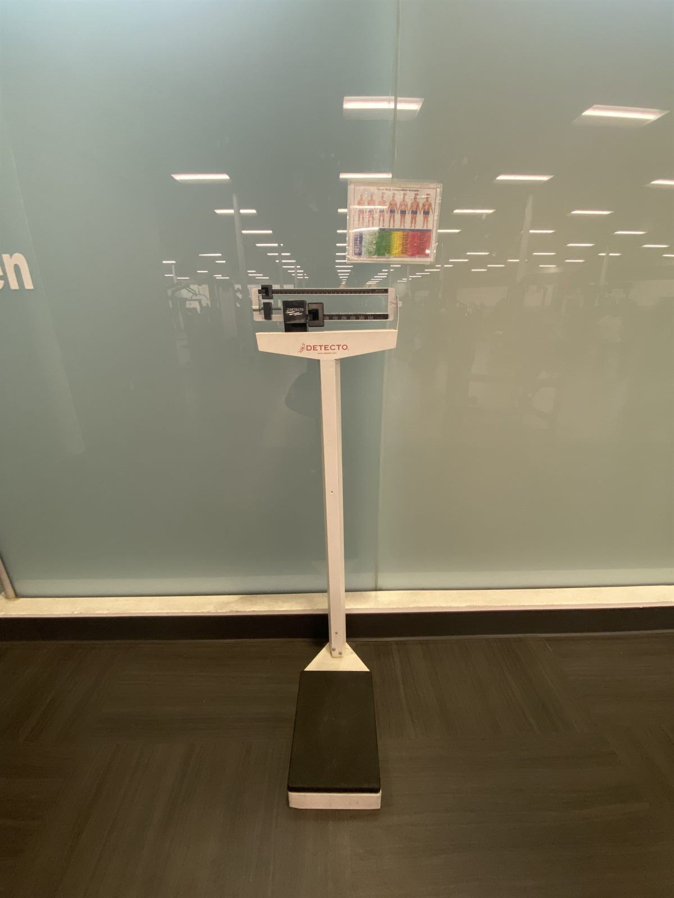
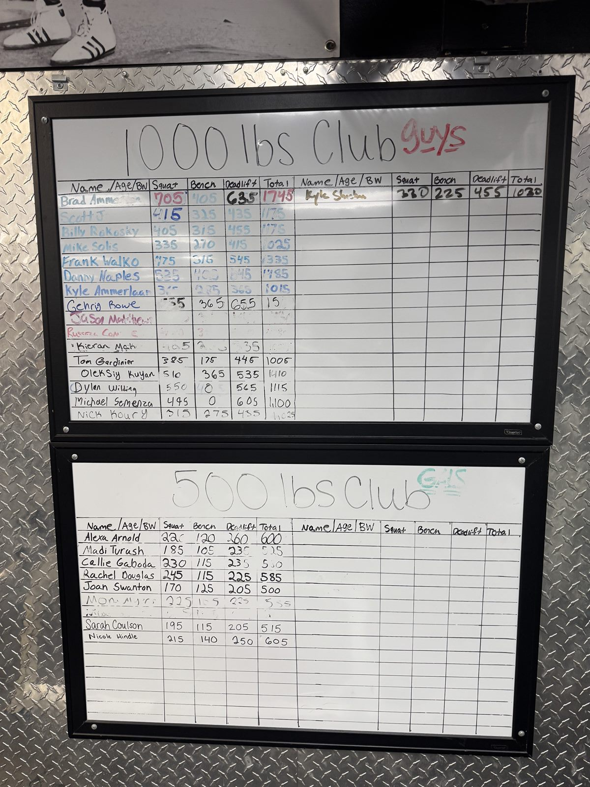
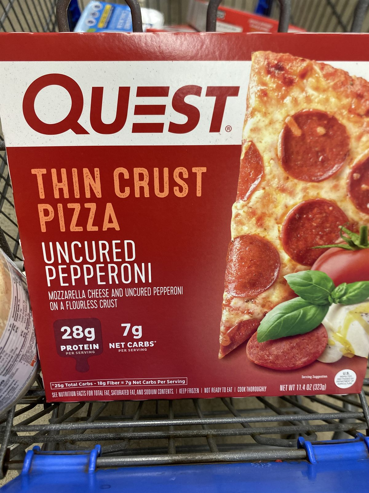
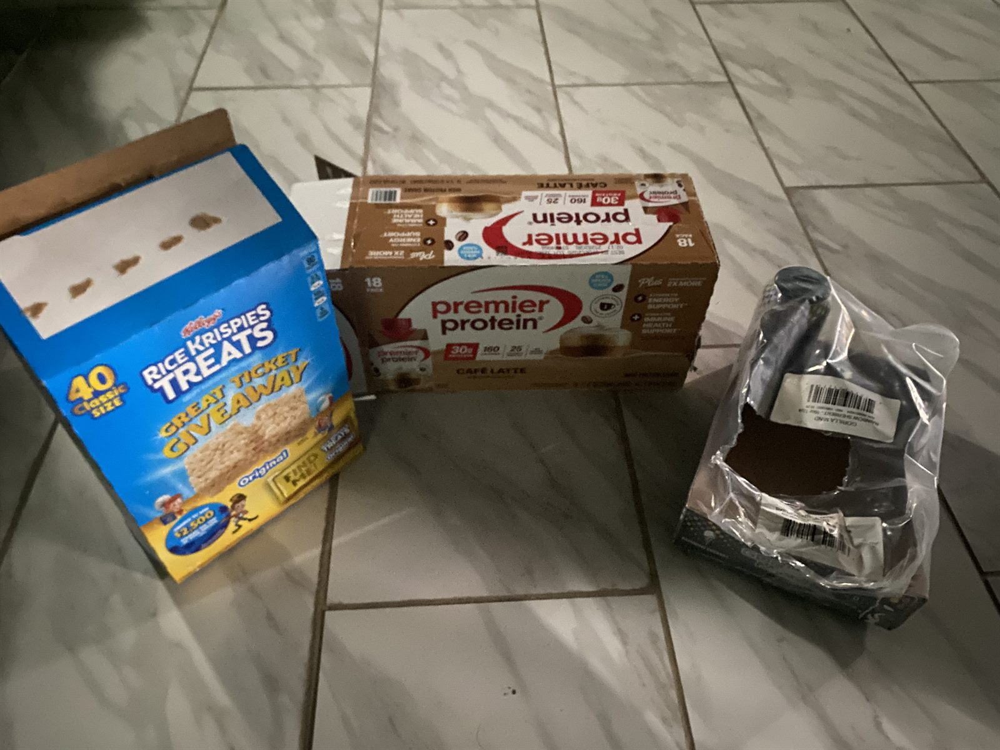

Pictorial Inventory
Bodybuilding In And Out Of The Gym
This pictorial page catalogs the world around bodybuilding. The images are not only decorations; they show the tools, spaces, habits, and small routines that shape training. The page is organized into training equipment, gym culture, and out-of-the-gym support because bodybuilding depends on more than one dramatic lift. It also depends on food, recovery, consistency, and the way people learn to move through a gym.
The split also corrects a common misconception. Bodybuilding is not only about lifting the heaviest possible weight. It includes progressive overload, smart exercise choices, nutrition decisions, and enough recovery to keep repeating the process. Some images are serious training records, while others show the funny or social parts of gym life that make the routine easier to return to.
Training Equipment
These images focus on the physical tools of bodybuilding: racks, benches, weights, and reference points that help a lifter track work. They connect directly to the review and map pages because the same equipment can be evaluated, photographed, and located inside the larger gym environment.






Training equipment also connects to measurable progress. Alongside the scale and body-fat reference image, this table tracks the broader changes that happened across the last couple of years, showing how bodybuilding is shaped by long phases rather than a single dramatic moment.
| Stage | Body Weight | Estimated Body Fat | Rate of Change | Note |
|---|---|---|---|---|
| Starting point | 220 lbs | 35-40% | - | Starting point before the first major cut. |
| Main cut | 220 to 190 lbs | 35-40% to 25-30% | About -2 lbs/week | Largest sustained period of weight loss. |
| Plateau | 190 lbs | 25-30% | 0 lbs/week | Weight loss slowed and stabilized. |
| Regain | 200 lbs | 28-32% | Positive regain | Weight increased after the plateau. |
| Return to cut | 200 to 180 lbs | 30-35% to 26-30% | About -2 lbs/week | Returned to a more consistent cutting phase. |
| Current phase | Below/around 180 lbs | Still estimated around 26% | About -2 lbs/week | Currently cutting again after another pause. |
Gym Culture
The gym is also a social space. Leaderboards, familiar faces, inside jokes, and surprise moments make training feel less mechanical. This is where the project can bring in the community more visibly: future captions can mention fellow lifters by name or pseudonym, especially when a photo comes from a shared workout or a real interaction.




Out Of The Gym
Bodybuilding continues after the last set. Food choices, snacks, shopping, and planning shape whether training can be repeated consistently. These images connect to basic nutrition ideas like protein intake, calorie balance, and the practical tradeoffs people make when they want progress without making life miserable.



| Comparison | Bodybuilding Option | Regular Option | Main Takeaway |
|---|---|---|---|
| Protein cereal vs regular cereal | Premier Protein cereal | Honey Nut Cheerios | Much higher protein and lower sugar. |
| Powdered peanut butter vs regular peanut butter | PB2 | Jif Peanut Butter | Similar protein with fewer calories. |
| High-protein pizza vs regular frozen pizza | Quest Pizza | Regular frozen pizza | More protein for a similar meal role. |
| Zero-sugar energy drink vs sugared energy drink | Gorilla Mind | Monster Original | Much lower calorie and sugar load. |